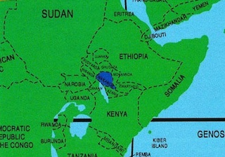
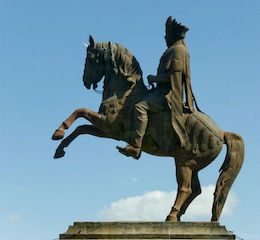

where is it actually?
published on mar 4,2018

The official website describes Wakanda as
a fictional East African nation in Black Panther
Movie and the New York Times also wrote last week
saying ““Black Panther” is a Hollywood movie, and
Wakanda is a fictional nation.” The word Wakanda
may be a new term created for the movie but there
is a Wakanada like country in Africa. It is not fictional
unless they want to plagiarize the facts and call it
fictional, the story-line and the characters in the movie
do happen to copy an existing country in East Africa: Ethiopia.
Ethiopia is a nation in East Africa, which has never been colonized,
it defeated colonial Italy in 1896 at the Battle of Adwa. Perhaps to make it a product of his own creativity, the producer places
Wakanda as country located between Uganda and Kenya but Ethiopia
is a bit far from Uganda and doesn’t share borders.
The story
published on feb28,2018
Another
explanation of the fact that the Black Panthers
producers are actually depending on Ethiopian history is
the use of a character, “the elder of one of the largest
tribes in Wakanda” wearing a green suit and a clay disc
on his lower lip/lip plating. In the lower Omo Valleys of
South Western Ethiopia, girls of the marrying age still cut
the lower lip plate a disc shaped clay in it. It is a sign
of beauty. The men do not do this but Black Panther has used
it for a man. “These are roles you don’t usually see a black
person taking,” said Blen Sahilu, an Ethiopian lawyer and
activist who has seen the movie three times. She singled out
the role of Shuri, who is also the chief scientist of Wakanda,
for its impact.
the real King
published feb 20,2018

Thanks to T’Challa, Wakanda is technologically advanced.
In deed, Emperor Menelik II was the first Ethiopian and
African King who introduced and adopted the most advanced
technologies of the late 19th century to his people and
country. Electricity, telegraph, printing press, train,
hotel, cinema, schools, hospital and telecommunication,
Menelik II technologized Ethiopia even when most African c
ountries did not even have any of them. The first to cycle
and drive a car and the most techno-savvy Emperor. Not today’s
Ethiopia! T’Challa’s characters are very much of Menelik II’s.
Except this time was different. Aside from having a civilization
that dated back some 2,000 years, Ethiopia was also united for
the first timed in centuries under Menelik, who had also succeeded
in buying modern weapons to arm his troops.